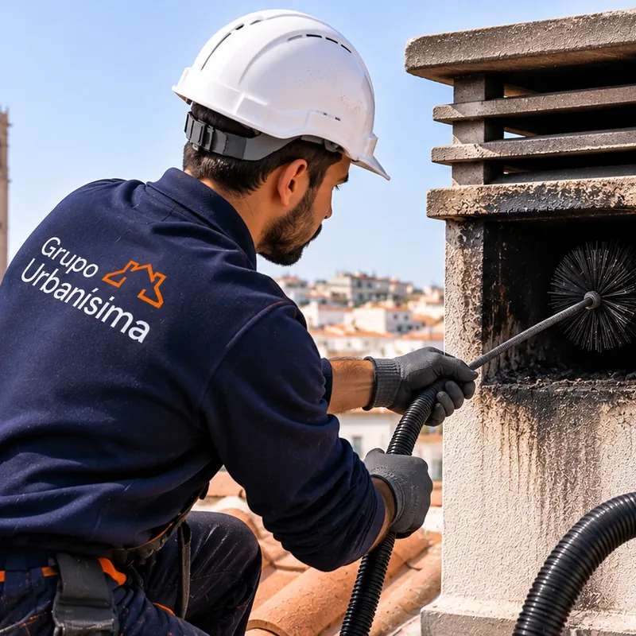

Desatasco de chimeneas y salidas de humo en Valencia
Si el humo no sale bien o el conducto está obstruido, los gases pueden quedarse dentro de la vivienda, lo que resulta peligroso. Desatascamos chimeneas y salidas de humo para que vuelvan a funcionar con seguridad.
- Visita a domicilio sin coste
- Presupuesto sin compromiso
- Para viviendas, comunidades y naves industriales

IlustrativaQué hacemos
- Desatasco de chimeneas y conductos de humos obstruidos
- Eliminación de hollín, creosota y residuos acumulados
- Revisión de la salida de humos
- Recomendaciones para evitar nuevas obstrucciones
Cuándo necesitas este servicio
- El humo no sale bien o vuelve a la vivienda
- Olor a humo en el interior
- La chimenea o la salida de humos parece obstruida
Cómo trabajamos
- 1Visita sin costeVamos a tu domicilio, local o edificio para ver el trabajo.
- 2Presupuesto sin compromisoTe lo entregamos con el plan de trabajo y de seguridad.
- 3Ejecución con garantíaTrabajamos con las mejores marcas y gestionamos las licencias de obra si se necesitan.
Preguntas frecuentes
¿Es peligroso un conducto obstruido?
Con el conducto obstruido, los gases se quedan en el interior de la vivienda, lo que puede ser un peligro para quienes estén dentro. Conviene revisarlo cuanto antes.
¿Os encargáis también del mantenimiento?
Sí. Además del desatasco, realizamos limpieza y mantenimiento periódico de chimeneas.
¿Cuánto cuesta?
Depende del tipo de instalación y del acceso. Hacemos una visita sin coste y te damos un presupuesto sin compromiso.
Otros servicios
También te puede interesar
Contacto
Pide tu presupuesto de desatasco de chimeneas y salidas de humo
Visita a domicilio sin coste y presupuesto sin compromiso, en toda la provincia de Valencia.
- Llámanos+34 722 115 251
- WhatsAppEscríbenos ahora
- Emailinfo@grupo-urbanisima.com
- Atención telefónicaLunes a viernes, de 9:00 a 19:00